Toggle navigation

Gallery
Photographer I
Photographer II
Public Album
Stand Up For Democracy - Taiwan
Stand Up For Democracy - World
Video
Collection
Timeline
English
漢文
Contact
Sunflower Movement
太陽花學運
4am.tw
Our Voice @FB
#CongressOccupied
Photographer II
歡迎分享您的作品 (Share your work with us)
330「捍衛台灣民主」全球時差接力活動收錄專區
Photographer
>
J Michael Cole
「臺灣公民運動紀實」網站刊登照片均獲著作人逐筆授權或經CC授權，特此致謝。
「臺灣公民運動紀實」網站旨於數位收錄公民運動資料，內容著作權係屬個別創作人所有，如須授權請徑洽原作。 © 2014
Anti.Suck.TW